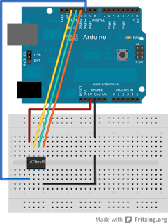
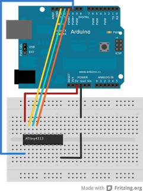
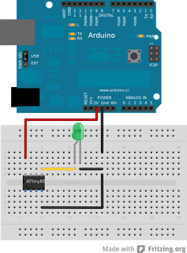
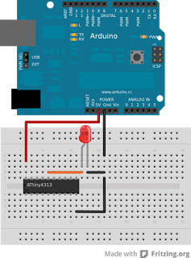

Los ATtiny son microcontroladores AVR (basado en RISC) de 8-bits, fabricados por Atmel. Entre sus características se encuentran:
- capacidad flash de 512B a 16kB.
- SRAM de 32 a 512 bytes.
- reloj integrado, hasta 20Mhz con reloj externo.
- de 6 a 28 pines.
- bajo consumo, opera entre 1 y 5.5 volt.
- capacidad I2C/SPI
Si bien son algo limitados en cuanto a capacidad de programa y cantidad de pines, son suficiente para algunas aplicaciones básicas en que un aparato como un Arduino es excesivo.
En este caso veremos cómo cargar programas al ATtiny85 y ATtiny4313 empleando un Arduino como ISP.
Preparar el IDE
- Bajamos los "cores" para los ATtiny desde arduino-tiny.
- Creamos la carpeta hardware dentro de la carpeta de sketchbook, luego copiamos dentro de ella el contenido del archivo descargado en el paso anterior.
- Abrimos el IDE Arduino y en Tools -> Board veremos las ATtiny
Preparar el Arduino como ISP
- Conectamos el Arduino al computador.
- Abrimos el IDE de Arduino.
- Abrimos el sketch Arduino ISP (File -> Examples -> ArduinoISP)
- Seleccionamos la placa arduino que corresponda (Tools -> Board -> XXX).
- Buscamos en el código la función heartbeat(), reemplazamos la instrucción delay(40) por delay(20).
- Cargamos el sketch al Arduino (File -> Upload).
Preparar conexiones para cargar programa
| 1. Una vez tenemos el Arduino como ISP, conectamos los cables de esta forma: Pin Arduino | Pin ATtiny85 | Pin ATtiny4313 |
|---|---|---|
| 13 | 7 (SCL/SCK) | 19 (SCL/SCK) |
| 12 | 6 (MISO) | 18 (MISO) |
| 11 | 5 (MOSI) | 17 (MOSI) |
| 10 | 1 (RESET) | 1 (RESET) |
| 5V | 8 (VCC) | 20 (VCC) |
| Gnd | 4 (GND) | 10 (GND) |

{kind=link}
ATtiny85, conexiones para programar

{kind=link}
ATtiny4313, conexiones para programar
2. Abrimos el IDE Arduino
3. Abrimos el sketch de parpadeo de led (File -> Examples -> Basics -> Blink). Se debe dejar tal cual para ATtini4313, pero hay que cambiar el número de PIN de 13 a 0 para ATtiny85
4. Cambiamos la placa para seleccionar la adecuada a nuestro ATtiny (Tools -> Board -> ATtinyXXXXX)
5. Cambiamos el programador (Tools -> Programmer -> Arduino as ISP)
6. Subimos el programa al ATtiny (File -> Upload). Es normal que aparezcan alguno mensajes.
Uso del ATtiny en forma normal
Una vez que hemos cargado el programa al ATtiny podemos probarlo haciendo la circuitería adecuada. En este caso, haremos parpadear un led. El Arduino sólo funciona como fuente de poder:

{kind=link}
ATtiny85 funcionando, arduino solo como fuente de poder

{kind=link}
ATtiny4313 funcionando, arduino solo como fuente de poder